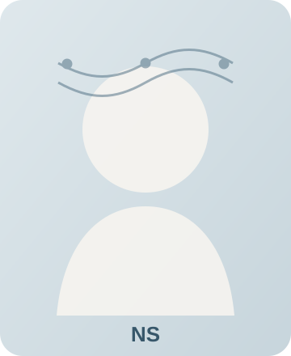

Sequence-to-sequence models with attention mechanistically map to the architecture of human memory search
N. Salvatore and Q. Zhang
Communications Psychology, 3, Article 146, 2025
[Journal] [Code] [PubMed]

Nikolaus Salvatore
PhD Student in Computer Science, Rutgers University
Human memory-inspired AI · Large language models · Computational cognitive science
nikolaus.salvatore@rutgers.edu
Postdoc search: I am exploring postdoctoral opportunities in computational cognitive science, artificial intelligence, machine learning, and related areas.
I am a PhD student in Computer Science at Rutgers University-New Brunswick and a member of the Memory Optimization Lab. I study how biological and artificial systems encode, retrieve, and prioritize information. My current work connects computational models of human memory with neural sequence models and investigates how information-retrieval demands shape positional biases in large language models.
Before Rutgers, I worked on event-based computer vision, neuromorphic computing, spiking neural networks, adaptive sensing, and space-domain awareness. Across these areas, I am interested in how intelligent systems allocate limited representational and computational resources to find relevant information.
I earned an M.E. in Computer Engineering from the University of Pittsburgh and a B.S. in Biological Sciences and Computer Science from Cornell University. My research background also includes appointments with KBR, the Air Force Research Laboratory, and the NSF Center for Space, High-Performance, and Resilient Computing.
research
journal article & selected peer-reviewed publications
Parallels between neural machine translation and human memory search: A cognitive modeling approach
N. Salvatore and Q. Zhang
Proceedings of the 46th Annual Conference of the Cognitive Science Society, 2024
[Paper]
Dynamic vision-based satellite detection: A time-based encoding approach with spiking neural networks
N. Salvatore and J. Fletcher
International Conference on Computer Vision Systems, LNCS 14253, 2023
[Paper]
Learned event-based visual perception for improved space object detection
N. Salvatore and J. Fletcher
IEEE/CVF Winter Conference on Applications of Computer Vision, 2022
[Paper] [PDF]
A neuro-inspired approach to intelligent collision avoidance and navigation
N. Salvatore, S. Mian, C. Abidi, and A. D. George
AIAA/IEEE 39th Digital Avionics Systems Conference, 2020
[Paper]
Event-based noise filtration with point-of-interest detection and tracking for space situational awareness
N. Salvatore and A. D. George
2nd International Conference on Intelligent Medicine and Image Processing, 2020
[Paper]
preprint
Lost in the Middle: An Emergent Property from Information Retrieval Demands in LLMs
N. Salvatore, H. Wang, and Q. Zhang
arXiv:2510.10276, 2025
[arXiv] [OpenReview]
projects
current and prior research themes
Human memory and neural sequence modelsDeveloping interpretable neural-network models of human memory search by mapping sequence-to-sequence architectures and attention mechanisms onto context-based cognitive models. This work asks why particular memory architectures emerge and how learning produces human-like recall dynamics.Rutgers University · 2023-present
[Journal article] [Code]
cognitive modelinghuman memoryattentionsequence models
Information retrieval demands in large language modelsInvestigating whether primacy, recency, and lost-in-the-middle behavior arise as adaptations to mixtures of short-term and long-term retrieval demands during training. The project connects positional bias in LLMs to classic human memory paradigms and structural attention dynamics.Rutgers University · 2025-present
[Preprint] [OpenReview]
large language modelsinformation retrievalpositional biasattention dynamics
Event-based perception for space-domain awarenessDeveloped learning-based approaches for detecting, classifying, denoising, and tracking faint space objects in sparse asynchronous event-camera data. The work includes synthetic sensor-data generation, hybrid frame/event models, spiking neural networks, and adaptive sensing methods.KBR, AFRL, and NSF SHREC · 2018-2024
[WACV paper] [ICVS paper]
event-based visionneuromorphic computingspiking neural networksspace systems
Resilient and adaptive computing for space systemsBenchmarked deep-learning workloads across GPU and neuromorphic platforms, investigated radiation-hardened processing for space-based computation, contributed to the SSIVP experiment deployed to the International Space Station, and explored reinforcement learning for adaptive sensor control.NSF SHREC and KBR · 2018-2024
resilient computingGPU computingreinforcement learningadaptive sensing
talks & presentations
Presentation at the Context and Episodic Memory Symposium
CEMS, Philadelphia, Pennsylvania · 2026
A neural network model of free recall and its connection to neural machine translation
57th Annual Meeting of the Society for Mathematical Psychology and 22nd International Conference on Cognitive Modeling, Tilburg, Netherlands · 2024
[Program]
Parallels between neural machine translation and human memory search: A cognitive modeling approach
46th Annual Conference of the Cognitive Science Society · 2024
[Paper]
Parallels between neural machine translation and human memory search: A cognitive modeling approach
Context and Episodic Memory Symposium, Philadelphia, Pennsylvania (poster) · 2024
[Program]
Dynamic vision-based satellite detection: A time-based encoding approach with spiking neural networks
International Conference on Computer Vision Systems · 2023
Presentation at the Context and Episodic Memory Symposium
CEMS, Orlando, Florida · 2023
Learned event-based visual perception for improved space object detection
IEEE/CVF Winter Conference on Applications of Computer Vision · 2022
A neuro-inspired approach to intelligent collision avoidance and navigation
AIAA/IEEE 39th Digital Avionics Systems Conference · 2020
Event-based noise filtration with point-of-interest detection and tracking for space situational awareness
2nd International Conference on Intelligent Medicine and Image Processing · 2020
teaching
Teaching Assistant, Department of Computer Science
Rutgers University-New Brunswick · 2023-present
01:198:211 Computer Architecture
01:198:213 Software Methodology
01:198:440 Introduction to Artificial Intelligence
01:198:211 Computer Architecture
01:198:213 Software Methodology
01:198:440 Introduction to Artificial Intelligence